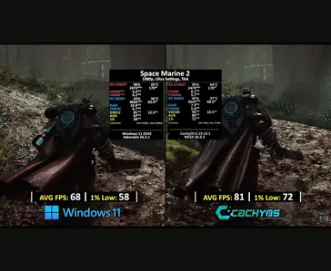

.png)

¿Qué es? CachyOS
CachyOS es una distribución basada en Arch Linux. Su objetivo es ser la versión más rápida y fluida disponible, optimizada desde su "corazón" para que el hardware rinda al máximo.
¿Por qué esta distro?
Imagina que Linux es un motor estándar. CachyOS lo toma y lo ajusta pieza por pieza para que corra como un auto de carreras, aprovechando cada instrucción de tu procesador.
Características principales
Máxima Velocidad de CPU
CachyOS no usa un código genérico. Está compilado específicamente para las instrucciones de los procesadores modernos (x86-64-v3 y v4). Esto significa que tu computadora entiende las órdenes más rápido, reduciendo esperas y mejorando la respuesta general de todo el sistema.
Fluidez Total en Juegos
Gracias al Kernel BORE y al programador de tareas Sched-ext, el sistema prioriza tus juegos por sobre las tareas de fondo. Esto reduce el input lag (el retraso entre que tocás una tecla y ves la acción) y mantiene los FPS más estables, incluso en títulos exigentes.
Actualizado y Seguro
Aunque recibe lo último del software apenas sale (Rolling Release), CachyOS cuenta con repositorios propios testeados. Esto te asegura tener las últimas funciones y parches de seguridad de Arch Linux, pero con una capa extra de estabilidad para que nada se rompa al actualizar.
Instalación Flexible
CachyOS ofrece múltiples opciones de instalación, desde instaladores gráficos amigables hasta configuración manual completa. Perfecta tanto para principiantes como para usuarios avanzados que quieren personalizar cada aspecto de su sistema.
Comunidad Activa
Detrás de CachyOS hay una comunidad apasionada que constantemente optimiza y mejora la distro. Encontrarás soporte, guías y soluciones rápidas a tus problemas.
Rendimiento Gaming
Con soporte nativo para Proton, Wine y otras herramientas de compatibilidad, CachyOS es la distro gaming definitiva. Disfruta de tus juegos favoritos de Windows con un rendimiento optimizado.
Comparación de Rendimiento
Windows 11
68 FPS
1% Low: 58 FPS
CachyOS
81 FPS
1% Low: 72 FPS